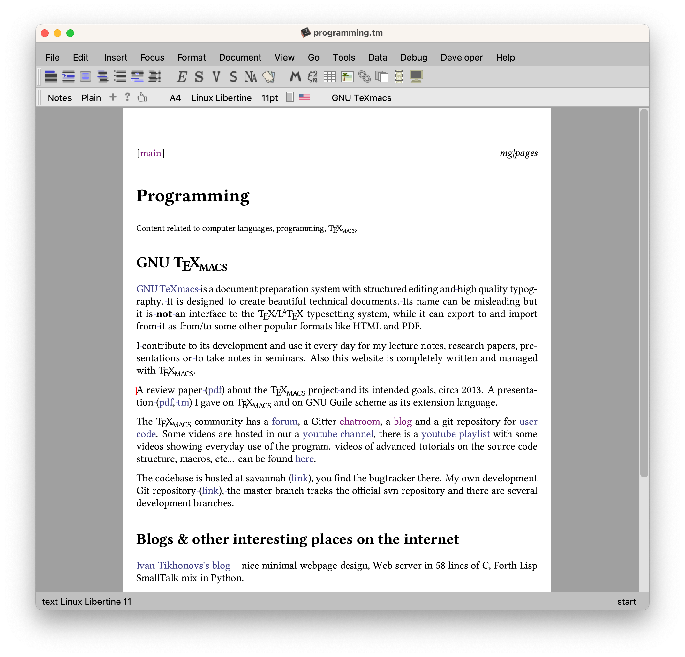
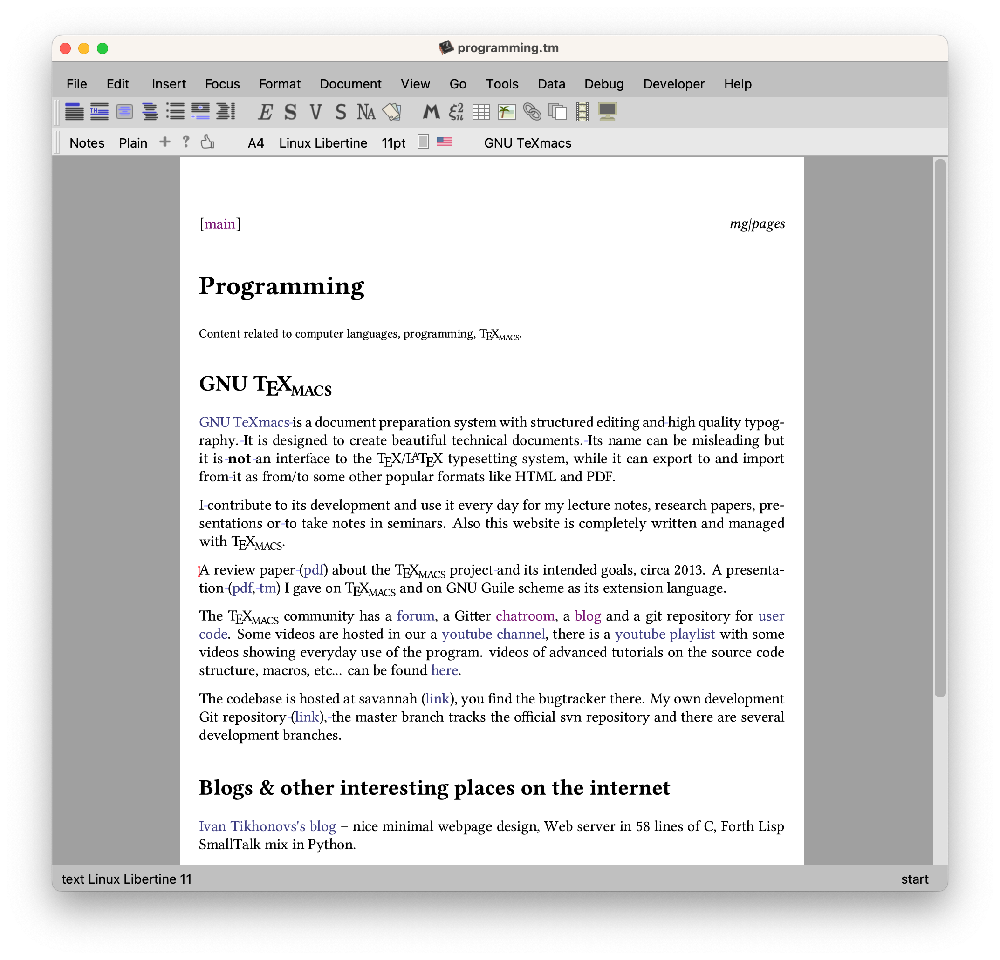
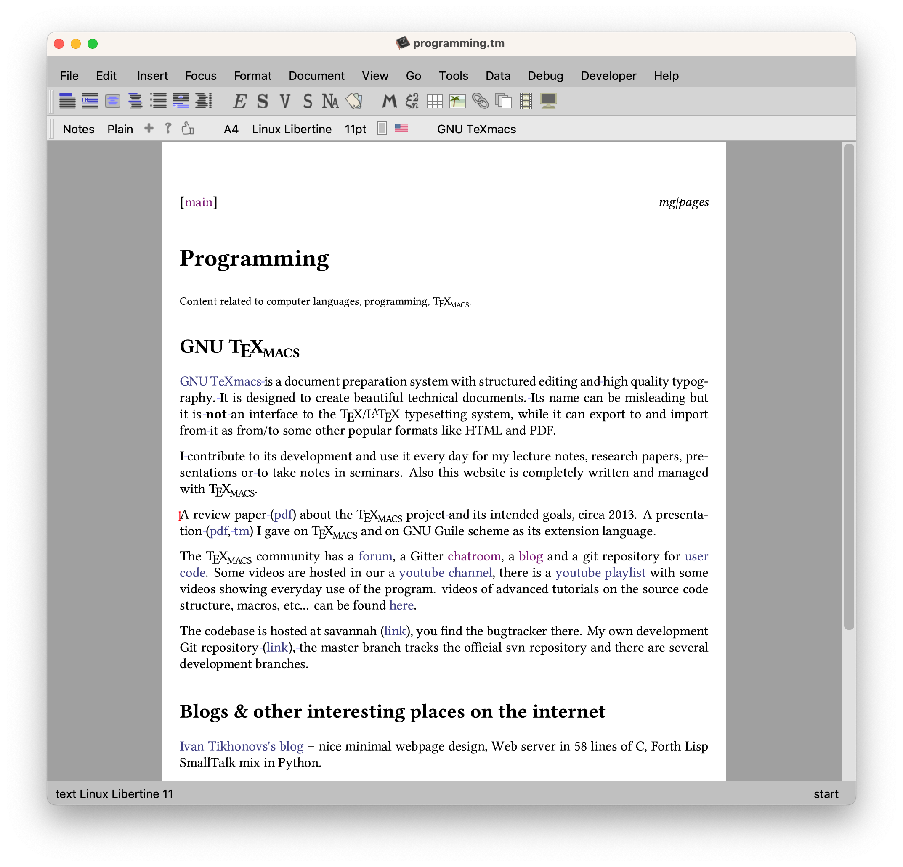

[main]mg|pages
GNU TeXmacs is a document preparation system with
structured editing and high quality typography. It is designed
to create beautiful technical documents. Its name can be misleading
but it is not an interface to the TeX/LaTeX
typesetting system, while it can export to and import from it as
from/to some other popular formats like

I contribute to its development and use it every day for my lecture notes, research papers, presentations or to take notes in seminars. Also this website is completely written and managed with TeXmacs.
A review paper (pdf) about the TeXmacs project and its intended goals, circa 2013. A presentation (pdf, tm) I gave on TeXmacs and on GNU Guile scheme as its extension language.
The TeXmacs community has a forum, a Gitter chatroom, a blog and a git repository for user code. Some videos are hosted in our a youtube channel, there is a youtube playlist with some videos showing everyday use of the program. videos of advanced tutorials on the source code structure, macros, etc… can be found here.
The codebase is hosted at savannah (link), you find the bugtracker there. My own development Git repository (link), the master branch tracks the official svn repository and there are several development branches.
Ivan Tikhonovs's blog – nice minimal webpage design, Web server in 58 lines of C, Forth Lisp SmallTalk mix in Python.
Lisp in small pieces on modern Schemes ⋅ Femtolisp ⋅ Meta II ⋅ S7 Scheme ⋅ Maru ⋅
Ian Piumatra's software projects
Matthew Butterick's Practical Typography
Build your own Lisp / Daniel Holden's website / Peter Norvig's website